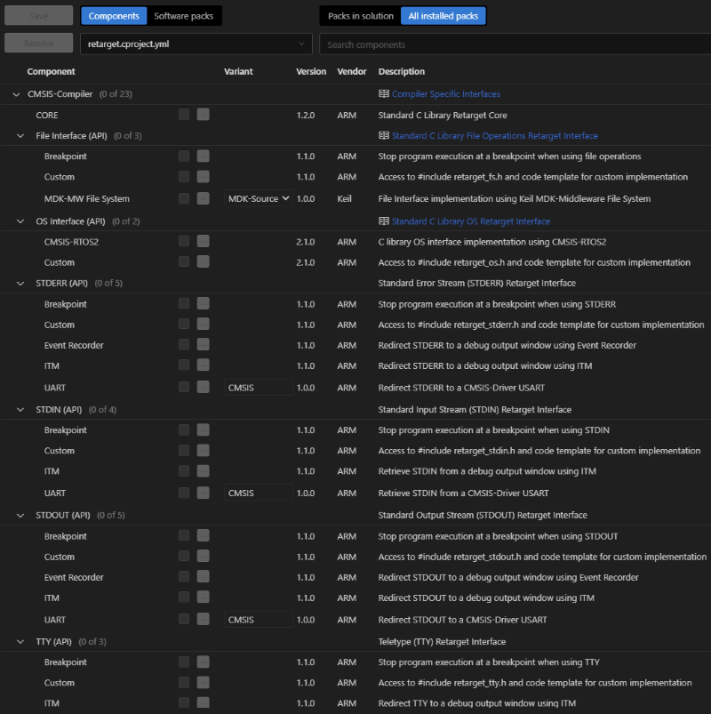

The following steps are required to install the ARM::CMSIS-Compiler pack and to use the software components that are shipped with the CMSIS-Pack.
Note
The installation and usage instructions are assuming you are using a CMSIS-Toolbox based environment.
Add the ARM::CMSIS-Compiler pack to your installation:
Alternatively, you can download the latest version from the CMSIS-Compiler page.

The Event Recorder subcomponent requires the CMSIS-View::Event Recorder component from the CMSIS-View pack.
1) Install the CMSIS-View pack:
2) In the Manage Software Components dialog, select Software Pack, then choose All installed packs and find and select ARM::CMSIS-View.

3) Select the CMSIS-View::Event Recorder component.

The project yml file should contain:
The RTT subcomponent requires the SEGGER::RTT component from the SEGGER RTT pack.
1) Install the SEGGER RTT pack:
2) In the Manage Software Components dialog, select Software Pack, then choose All installed packs and find and select SEGGER::RTT.

3) Select the SEGGER::RTT component.

The project yml file should contain:
The UART subcomponent provides default implementation variant CMSIS which requires the CMSIS Driver::USART implementation, typically provided by a Board Support Pack (BSP) or Device Family Pack (DFP) for the target hardware.
Note
Use the CMSIS Packs catalog to find the appropriate pack for your target hardware.
1) Install the Board Support Pack (BSP) or Device Family Pack (DFP):
2) In the Manage Software Components dialog, select Software Pack, then choose All installed packs and find and select installed BSP or DFP.
3) Select the CMSIS Driver::USART component.

The project yml file should contain: